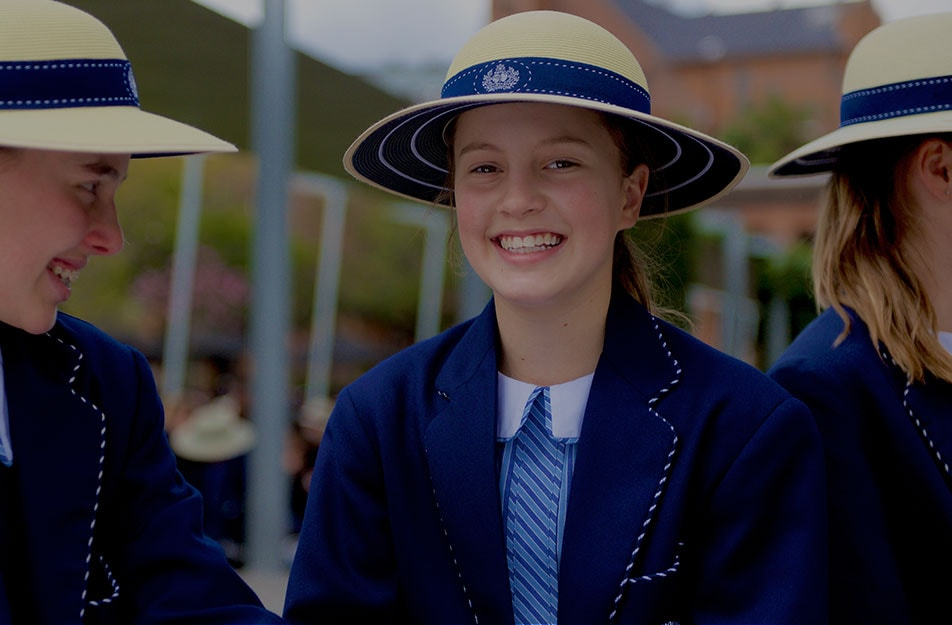

ADMISSION PROCEDURE
Thanks for your enquiries. This is the admission procedure:
-
Pick up a Registration form cost #10,000 for Nursery and Primary schools
from the admission office.or download from our website. Application form
will only be sold to parent whose child meets the age requirement
- Return completed form with:
- 2 Passport Photograghs
- Photocopy of Immunization Record
- Photocopy of Birth Certificate
-
Transcript or Photocopies of past school results for three previous &
consecutive years if the child has been in school that long.
NB:Both parent are required to sign
the application form and
attend the
interview.
- schedules an assesment date with the Head of Nursery/Key stage.
-
Assessments for the primay school takes place in March.
Other
assesments take place all year round depending onavailable openings
ONLINE ADMISSION
Applications will only be processed;
-
If a non refundable application fee of #10,000.00 (Ten Thousand Naira
Only) has been paid into the school account and a scanned receipt of
payment received by the school account department.
-
If all required decuments have been received by the admissions officer.
-
And if you are successful in the examination you shall be notified via
email and we shall send you a pack which contains all the information
you would need.